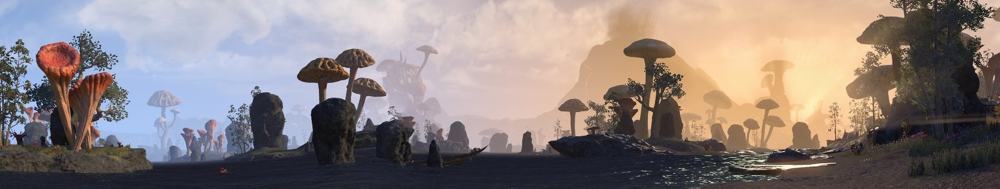

Karten
ESO verfügt über große und flächendeckend mit Aktivitäten gefüllte Karten. Dabei handelt es sich aber nur um die Karten der drei Allianzen, dem Aldmeri Dominion, dem Ebenherz Pakt wie auch dem Dolchsturz Bündnis. Um euch nun die Suche nach sämtlichen markierten Orten oder den Himmelsscherben zu erleichtern, werden nun alle Karten der Allianzen angeführt.
